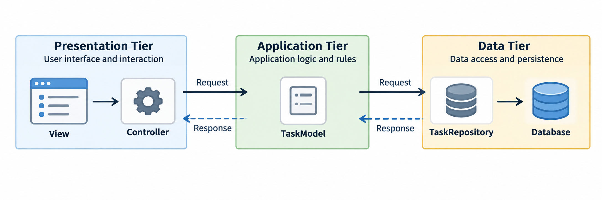

Exam Format and Rules
Coverage: slide decks 7–12
Time and points: 75 minutes, 100 points
Question types: choice, matching, categorization, blanks, and short responses
Delivery: LockDown Browser
Allowed: the exam computer and one double-sided letter-size cheat sheet
Not allowed: any other visible electronics
Roadmap
Application architecture: assign responsibilities.
Persistence and data consistency: store data and group changes.
Spring: connect components, repositories, and HTTP requests.
Three-Tier Architecture
Three-tier architecture separates responsibilities through defined interfaces.
| Tier | Responsibility | Typical classes |
|---|---|---|
| Presentation | Input, events, and results | View, desktop or web Controller |
| Application | Domain state, rules, and coordination | Domain objects, Model, Service |
| Data | Loading, saving, and mapping | Repository and implementation |
The tiers can run in one Java program.
A new UI can reuse the application rules.
A new storage implementation can reuse the same rules.
MVC in Desktop and Web Applications
| Part | Responsibility | Examples in this course |
|---|---|---|
| Model | Own application state and valid operations | UI-independent Model or Service |
| View | Render state and results | JavaFX screen or REST client |
| Controller | Handle input and call application operations | Desktop or web Controller |
Boundary check: the Model should not read JavaFX controls or HTTP request objects.
Interfaces Keep Storage Replaceable
interface TaskRepository {
List<TaskItem> findAll();
void add(String title);
}Application code depends on this contract.
Memory and JDBC implementations stay behind it.
Replacing storage should not change callers.
Constructor Dependency Injection
class TaskModel {
private final TaskRepository repository;
TaskModel(TaskRepository repository) {
this.repository = repository;
}
}Plain Java can inject the repository.
Tests can supply a substitute.
Spring can assemble the same dependency.
An Operation Crosses the Three Tiers

Follow one request to the database, then follow the returned data back to the View.
Which Tier Owns Each Responsibility?
A desktop interface and a web interface use the same Task application.
| Responsibility | Presentation | Application | Data |
|---|---|---|---|
| Handle a button click or HTTP input | ✓ | ||
| Enforce the nonblank title rule for every caller | ✓ | ||
| Coordinate two related database changes | ✓ | ||
| Execute SQL and map result rows | ✓ | ||
| Render the result or HTTP response | ✓ |
A third interface can reuse the same application operation and repository boundary.
Persistence Units and Access Patterns
Persistence preserves data after the process ends.
| Approach | Unit of storage | Access pattern |
|---|---|---|
| In-memory collection | Objects in the running process | Data is lost when the process ends. |
| Java serialization | A reachable object graph | Load and rewrite a small Java snapshot. |
| Relational database | Tables and rows | Search and update selected records. |
Choose storage by the access pattern, then keep that choice behind the repository.
Serialization Outcomes
class WorkspaceLayout implements Serializable {
private static final long serialVersionUID = 7L;
Map<String, Integer> paneWidths = new HashMap<>();
transient boolean previewOpen = true;
}Before saving, paneWidths contains two entries.
| After loading | Result |
|---|---|
paneWidths.size() | 2 |
previewOpen | false |
UID changed to 8L | Loading fails |
Every reachable, non-transient object must also be serializable.
JDBC: From Java to Database Rows
| Step | Repository work |
|---|---|
| 1. Connect | Open a database connection |
| 2. Prepare | Create SQL with placeholders |
| 3. Bind | Supply parameter values |
| 4. Execute | Send the SQL |
| 5. Read | Interpret rows or an affected-row count |
| 6. Close | Release JDBC resources |
The repository owns the JDBC workflow and returns ordinary Java data.
Prepared SQL Parameters
String sql = "INSERT INTO tasks (title, done) VALUES (?, ?)";
try (PreparedStatement s = connection.prepareStatement(sql)) {
s.setString(1, title);
s.setBoolean(2, false);
int changed = s.executeUpdate();
}Parameter positions start at 1.
Placeholders bind values, not table or column names.
executeUpdate()returns the affected-row count.
JDBC Execution Results
Choose an execution method by its result type.
| API | Typical SQL | Returned result |
|---|---|---|
executeQuery() | SELECT | ResultSet |
executeUpdate() | INSERT, UPDATE, DELETE | Affected-row count |
execute() | General SQL execution | Whether the first result is a ResultSet |
Question: No rows match an UPDATE. What count is returned?
Answer: 0. Successful SQL can affect no rows.
ResultSet Cursor and Rows
try (ResultSet rows = statement.executeQuery()) {
while (rows.next()) {
tasks.add(new TaskItem(rows.getLong("id"),
rows.getString("title"), rows.getBoolean("done")));
}
}The cursor starts before the first row.
next()advances it and reports whether a row exists.
Empty result: the first next() returns false.
JDBC Resource Lifetime
try (Connection c = connect();
PreparedStatement s = c.prepareStatement(sql);
ResultSet rows = s.executeQuery()) {
// Convert rows into ordinary Java objects.
}Try-with-resources closes all three resources.
Committed rows remain stored after closing.
Returning
ResultSetexposes JDBC and resource lifetime.
ORM Automates Object-to-Row Mapping
ORM automates mapping between objects and database rows.
| Technology | Responsibility |
|---|---|
| ORM | Map objects and fields to tables and columns. |
| JPA | Define standard persistence APIs and mapping rules. |
| Hibernate | Implement JPA and execute the persistence work. |
| Spring Data JPA | Provide repository abstractions and supported implementations. |
JDBC requires manual binding and row mapping.
ORM delegates mapping to the provider.
Entity Mapping and Construction
@Entity
public class TaskItem {
@Id @GeneratedValue private Long id;
private String title;
protected TaskItem() { }
}| Requirement | This class |
|---|---|
| Entity annotation | @Entity |
| Primary key | @Id |
| No-argument constructor | Protected |
| Class and persistent members | Non-final |
A record cannot serve as a JPA entity.
Mapping Constraints and Application Rules
@Column(nullable = false, length = 100)
private String title;| Check | Meaning |
|---|---|
@Column | Describe column mapping and constraints |
| Database NOT NULL | Stored value cannot be null |
| Application nonblank rule | Reject null, empty, or whitespace-only input |
| Application operation rule | Check domain conditions before changing state |
Question: Does NOT NULL reject a title containing only spaces?
Answer: No. Application code needs a nonblank check.
A Transaction Defines One Unit of Work
EntityTransaction transaction = entityManager.getTransaction();
transaction.begin();
TaskItem first = entityManager.find(TaskItem.class, firstId);
TaskItem second = entityManager.find(TaskItem.class, secondId);
first.setDone(true);
second.setDone(true);
transaction.commit();Both changes belong to one unit of work.
Success: commit both changes.
Failure: roll back both changes.
Two separate commits cannot provide the same all-or-nothing guarantee.
Persistence Context: Which Objects Are Tracked?
Persistence context: the set of entities managed by an EntityManager
| State | Meaning | Example transition |
|---|---|---|
| New | Not yet managed or stored | new creates an instance |
| Managed | Tracked by this context | find() or persist() |
| Detached | Identity remains, tracking has ended | clear() detaches all |
| Removed | Managed and marked for deletion | remove() |
A detached entity remains a usable Java object.
Automatic change tracking has ended.
Dirty Checking of Managed Entities
EntityTransaction transaction = entityManager.getTransaction();
transaction.begin();
TaskItem task = entityManager.find(TaskItem.class, id);
task.setDone(true);
transaction.commit();find()returns a managed entity.The setter changes its tracked state.
Commit flushes the pending change.
Detached changes are not synchronized automatically.
Flush, Clear, Commit, and Rollback
| Operation | Database effect | Tracking effect |
|---|---|---|
flush() | Send pending SQL inside the transaction | Entities remain managed |
clear() | No commit and no undo | Detach all entities |
commit() | Make transaction changes permanent | Complete the transaction |
rollback() | Cancel uncommitted changes, including flushed SQL | End the transaction |
flush() synchronizes. Only commit() makes the transaction permanent.
Rollback: Java Object vs. Database Row
Assume the task row starts with done = false and every call succeeds.
EntityTransaction transaction = entityManager.getTransaction();
transaction.begin();
TaskItem task = entityManager.find(TaskItem.class, taskId);
task.setDone(true);
entityManager.flush();
transaction.rollback();Question: Immediately after
task.setDone(true), what doestask.isDone()return?Answer:
true. The setter changed the in-memory Java object.Question: A new transaction reloads the task after rollback. What value comes from the database?
Answer:
false. Flush sent the SQL, but rollback canceled it before commit.
Spring Connects Application Components
A bean is an object managed by Spring’s application context.
| Spring feature | What it connects |
|---|---|
| Core and dependency injection | Controllers, Services, and repositories |
| Spring Data JPA | Repository interfaces and JPA operations |
| Spring MVC | HTTP requests and controller methods |
Spring Boot starts the application context.
The context creates and connects the beans.
Bean Registration and Injection
| Mechanism | What it does |
|---|---|
@Configuration + @Bean | Define beans through factory methods. |
@ComponentScan | Search specified packages for components. |
@Component | Mark a general component. |
@Service / @Repository | Mark application or data-access components. |
Maven adds libraries, not beans.
Scanning skips an unannotated helper.
A single constructor needs no
@Autowired.
Dependency Resolution
| Eligible beans | Result |
|---|---|
| None | Bean creation fails: missing dependency |
| One | Inject that bean |
Several, one @Primary | Default for an unqualified dependency |
| Several, no unique match | Bean creation fails: ambiguous dependency |
TaskService(
@Qualifier("diskRepository")
TaskRepository repository) {
this.repository = repository;
}Question: Does a qualifier create a bean?
Answer: No. @Qualifier selects an already registered bean.
Spring Data Supplies Common Operations
Spring Data implements JpaRepository for the declared entity and ID types.
interface TaskRepository extends JpaRepository<TaskItem, Long> {
}| Operation | Meaning |
|---|---|
findAll() | Read entities, optionally with a Sort. |
findById() | Looks up an ID and returns an Optional. |
save() | Persist a new entity or merge its state |
deleteById() | Delete by ID |
Derived Query Name Parts
List<TaskItem> findByTitleContainingIgnoreCase(String text);| Part | Meaning |
|---|---|
| Title | Property to search |
Containing | Text may appear anywhere in the value |
IgnoreCase | Ignore uppercase / lowercase differences |
Question: Which titles match a search for “jpa”?
Answer: “Review JPA” and “jpa notes”. Request sorting separately when order matters.
Spring Manages the Transaction Boundary
@Transactional
public void completeTasks(Long firstId, Long secondId) {
repository.findById(firstId).orElseThrow().setDone(true);
repository.findById(secondId).orElseThrow().setDone(true);
}Both changes share that transaction.
Success commits both changes.
An unchecked exception rolls both back by default.
Call the injected Service through Spring’s transaction proxy.
Read-Only Transactions Declare Intent
@Transactional(readOnly = true)
public List<TaskItem> listTasks() {
return repository.findAll();
}Database queries still run.
Supporting infrastructure may reduce write-related work.
Returned Java objects can still have mutable fields.
Attempted writes are not guaranteed to throw exceptions.
Resources and Stateless Requests
A web API exposes application operations through HTTP.
| Concept | Meaning |
|---|---|
| Resource | Something the API identifies, such as a task. |
| Resource URL | Collection: /api/tasks. Item: /api/tasks/17. |
| Representation | Selected resource data, often JSON. |
| Stateless request | Carries the information needed to understand it. |
Each request identifies its target.
Database state can still persist.
HTTP: Request and Response Parts
POST /api/tasks HTTP/1.1
Content-Type: application/json
Accept: application/json
{"title":"Prepare demo"}| Part | Meaning |
|---|---|
| Method and target | Requested operation and resource |
Content-Type | Format of this message’s body |
Accept | Requested response format |
| Body | Optional message data |
HTTP Methods and Resource Operations
| Intent | Method | Example target |
|---|---|---|
| Read a collection | GET | /api/tasks?done=false |
| Read one item | GET | /api/tasks/17 |
| Create an item | POST | /api/tasks |
| Change selected fields | PATCH | /api/tasks/17 |
| Delete an item | DELETE | /api/tasks/17 |
The same path with a different method can select a different operation.
Spring MVC Request Pipeline
| Step | Framework or application work |
|---|---|
| 1. Receive | Accept the HTTP request |
| 2. Route | Select a handler by method and path |
| 3. Bind | Convert request data to Java values |
| 4. Validate | Check request constraints |
| 5. Execute | Controller calls the Service, then the Repository |
| 6. Respond | Serialize data or translate an error |
Request Routing and Handler Selection
@RestController
@RequestMapping("/api/tasks")
class TaskApiController {
@GetMapping("/{id}")
TaskItemResponse find(@PathVariable("id") Long id) { ... }
}| Method | GET |
|---|---|
| Combined path | /api/tasks/{id} |
| Java method name | Does not select the route |
Question: Which request matches?
Answer: GET /api/tasks/17
Request Binding
| Input location | Example | Annotation |
|---|---|---|
| Path segment | /api/tasks/17 | @PathVariable |
| Query string | ?done=false | @RequestParam |
| JSON body | {"title":"Prepare demo"} | @RequestBody |
Question: The id cannot become a Long. Is the Service called?
Answer: No. Binding fails before the controller body runs.
Request Validation
record CreateTaskRequest(
@NotBlank @Size(max = 100) String title) { }
@PostMapping
TaskItemResponse createTask(
@Valid @RequestBody CreateTaskRequest request) {
return taskService.createTask(request.title());
}| Annotation | Effect |
|---|---|
@Valid | Run validation before the controller body |
@NotBlank | Reject null, empty, and whitespace-only input |
@Size | Constrain length |
Shared application rules still apply to every caller.
Response Objects and Serialization
record TaskItemResponse(
Long id,
String title,
boolean done) { }| Stage | Work |
|---|---|
| Application result | Contains the completed operation’s data |
| Response object | Selects the public fields |
| Spring MVC | Serializes the object, usually as JSON |
Success: Status, Headers, and Body
return ResponseEntity
.created(URI.create("/api/tasks/17"))
.body(response);| Response part | Value |
|---|---|
| Status | 201 Created |
Location | /api/tasks/17 |
| Body | The supplied response object |
ResponseEntity controls all three parts.
HTTP Error Translation
| Cause | Typical status |
|---|---|
| Malformed input, failed conversion, or request validation | 400 Bad Request |
| Required resource does not exist | 404 Not Found |
| Unexpected server failure | 500 Internal Server Error |
@RestControllerAdviceshares error handling across controllers.@ExceptionHandlerselects the exception to handle.@ResponseStatusorResponseEntityselects the HTTP status.The handler returns the error response object.
Desktop and Web Call the Same Application
| Step | Desktop caller | Web caller |
|---|---|---|
| Input | Read controls and handle an event. | Route, bind, and validate the request. |
| Dispatch | Controller calls the Model or Service. | Controller calls the Service. |
| Result | Refresh View or show an error. | Return status, headers, and data. |
Verify through either interface:
The result is correct.
The stored data is correct.
A failed operation leaves no partial changes.